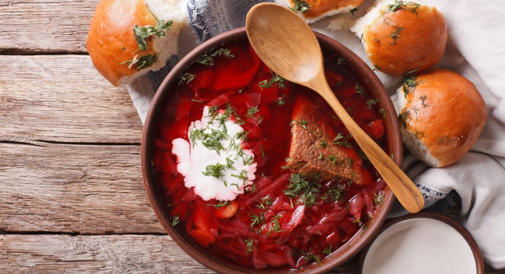

Borshch

“Borscht”, “borsch”, “borsh” or “борщ” is a true classic soup every Ukrainian grew up eating almost weekly. It can be vegan, vegetarian; with beef, pork or even chicken.
It truly depends what’s in your fridge that day. That’s how borscht came about – out of necessity and hunger.
Ingredients
- 12 cups beef or vegetable broth or stock (low sodium);
- 5 cups green or red cabbage (sliced);
- 1 large onion (chopped);
- 3 medium carrots (chopped);
- 2 tbsp olive oil;
- 3 large beets(peeled and cut into matchsticks);
- 4 large potatoes (peeled and cubed);
- 6 oz can tomato paste (low sodium);
- 2 tsp salt;
- 3 bay leaves;
- 1 tbsp white vinegar;
- Pinch of sugar;
- 3 large garlic cloves (grated);
- Ground black pepper (to taste);
- 1/4 cup dill or parsley (finely chopped);
- Sour cream and rye bread (for serving).
Instruction
- In a large pot (I use 6 quart Dutch oven), add broth, bay leaves and bring to a boil. In the meanwhile, wash, peel and cut vegetables.
- Once broth is boiling, add cabbage, cover and bring to a boil. Then reduce heat to low and cook for 20 minutes.
- In the meanwhile, preheat large skillet on medium heat and swirl 1 tbsp of oil to coat. Add onion, carrots and saute for 5 minutes, stirring occasionally.
- Add beets, remaining 1 tbsp of oil and cook for another 3-4 minutes.
- Transfer sauteed veggies to a pot along with potatoes, tomato paste and salt. Cover, bring to a boil and cook on low heat for 20 minutes.
- Turn off heat. Add vinegar, sugar, garlic and pepper. Stir and let borscht sit for 10 minutes to allow flavours to marry each other. Add dill, stir and adjust any seasonings to taste.
- Serve hot with a dollop of yogurt or sour cream, bread and garlic clove on the side (this is not for everyone).